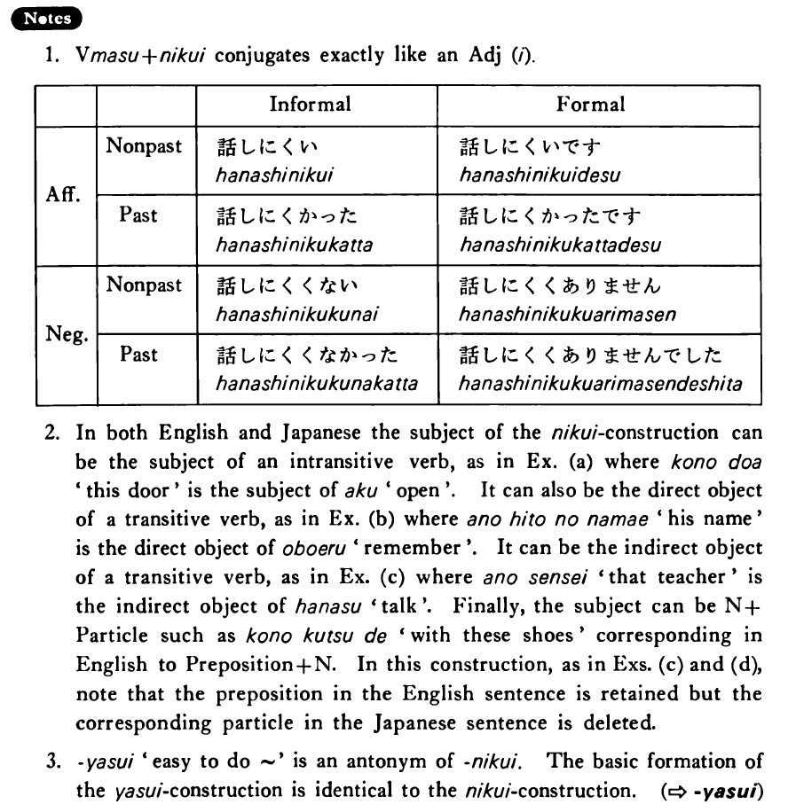

←
DoJG
→
難い・にくい
(B. 307)
Example sentences
(ks).
この本は大変読み
にくい・にくい
です。
This book is very hard to read.
(a).
このドアは開き
にくい
ですね。
This door doesn't open easily, does it?
(b).
あの人の名前は覚え
にくい
。
His name is hard to remember.
(c).
あの先生は話し
にくい
です。
That teacher is hard to talk to.
(d).
この靴は走り
にくい
です。
These shoes are hard to run in.
Formation
Vます
難い
話し
難い
Someone is hard to talk to
食べ
難い
Something is hard to eat
